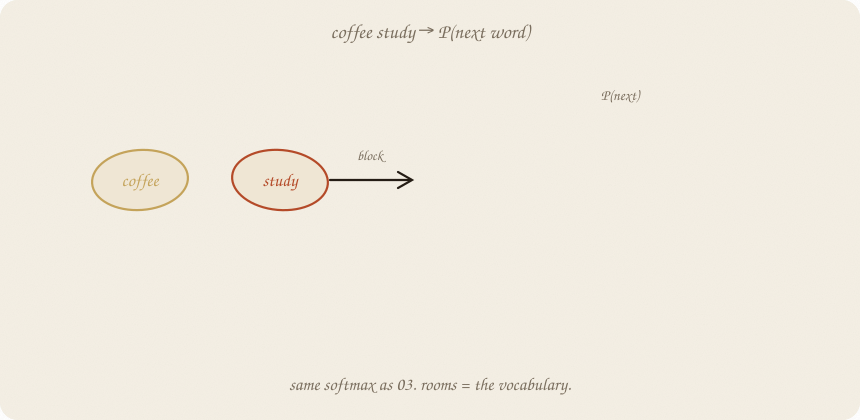
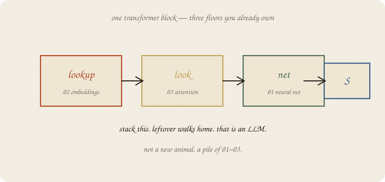
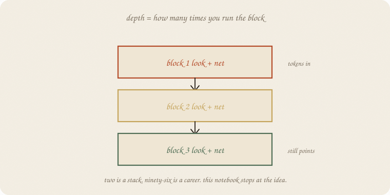
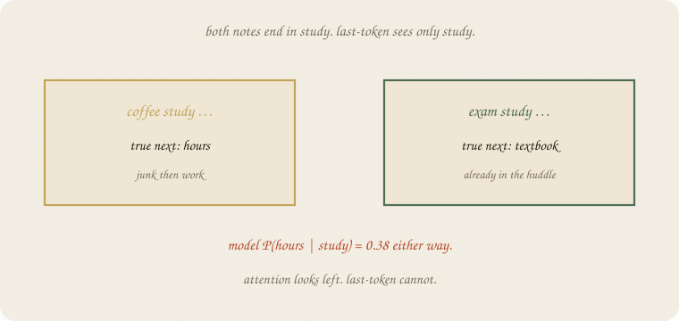
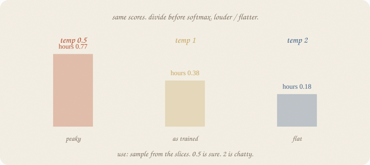
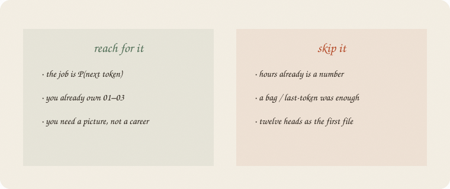

datazines · a sketchbook

Read 01 neural net, 02 embeddings, 03 attention, and 03 softmax first. Same exam notes. The job changed: not P(pass) — P(the next word).
Flip it like a notebook. One page = one idea. Done.
The notes are still:
coffee study hours
exam study textbook
An LLM does not “know the exam.” It asks, again and again:
given the words so far, what is P(the next one)?
Rooms = the vocabulary. Seventeen words here. A grown-up list is tens of thousands. Same squash as 03 softmax: scores in, slices that add to 1.
Train: the true next word should get a big slice. Leftover = surprise if that slice was small. Cross-entropy = −log P(true token). Same leftover as 03 softmax, aimed at the next word. Walk the knobs (01 gradient descent).
Use: pick the biggest slice, or sample. Then glue that word on and ask again.
A transformer block is not a fourth machine. It is:
Then softmax over the word-list.

Weight decay is ridge. Dropout is a cousin of bagging. Pages, not wings. The leftover still walks home.
One block mixes the note once. Stack = feed the mix into another look + net.

Two is a stack. Ninety-six is a career. This notebook stops at the idea.
Depth is extra floors, not extra magic. Extra knobs need extra notes, or they memorize coffee study hours and shrug on a new sentence.
A tiny model: look up the last word only, then softmax. No look. No stack.
On these 27 notes, 58 next-word pairs, dim 4, house seed 7, 400 quiet steps:
P(hours | study) = 0.38 — same as counting. P(noise | coffee) = 0.47, near the count 0.50. Cross-entropy 2.84 → 1.27 (random would sit near ln 17 ≈ 2.83).
It copied the bigram table. Useful. Also blind.

coffee study wants hours. exam study wants textbook. Both end in study. Last-token sees only study, so it cannot split them. Attention looks left — a mask so the future cannot leak. The postcard in 03 looked all ways; next-token training cannot. That is why 03 sits under this room.
Same scores. Divide by a number before softmax.

After study, P(hours):
| temp | P(hours) | pile |
|---|---|---|
| 0.5 | 0.77 | peaky, sure |
| 1 | 0.38 | as trained |
| 2 | 0.18 | flatter, chatty |
Use: sample from the slices. 0.5 repeats itself. 2 wanders. The scores did not change. You changed how peaky the pile is before you draw. Logistic’s 0.5 cut is different: it keeps P and only changes the yes/no call.
Tokenizer, context window, pretrain vs chat: extra pages when a project knocks. Not a second sketchbook.
If you keep only one thing:
P(next token) = softmax on a stacked look+net. leftover walks home.
Same 27 notes as 02 embeddings. Last-token model (the cheap LLM). Dim 4. House seed 7. No sklearn estimator — the walk is the lesson.
import numpy as np
from collections import Counter, defaultdict
notes = [
"study hours textbook",
"hours study tutor exam",
"textbook hours cram",
"tutor study hours",
"cram textbook study night",
"hours textbook tutor",
"study cram hours exam",
"tutor textbook hours",
"exam study textbook",
"night cram hours",
"sleep rest tired",
"rest sleep bed",
"tired sleep rest night",
"bed rest sleep",
"sleep tired bed",
"rest bed tired",
"sleep night rest",
"coffee phone scroll",
"phone coffee noise",
"noise hallway coffee",
"coffee noise hallway",
"phone scroll coffee",
"scroll phone instagram",
"study sleep hours",
"coffee study hours",
"tutor sleep rest",
"night exam coffee",
]
pairs = []
trigrams = []
for n in notes:
toks = n.split()
for i in range(len(toks) - 1):
pairs.append((toks[i], toks[i + 1]))
for i in range(len(toks) - 2):
trigrams.append((toks[i], toks[i + 1], toks[i + 2]))
nxt = defaultdict(list)
for a, b in pairs:
nxt[a].append(b)
vocab = sorted({w for n in notes for w in n.split()})
stoi = {w: i for i, w in enumerate(vocab)}
V = len(vocab)
rng = np.random.default_rng(7)
D = 4
Emb = rng.normal(0, 0.3, (V, D))
Wout = rng.normal(0, 0.3, (D, V))
bias = np.zeros(V)
def softmax(z):
z = z - z.max()
e = np.exp(z)
return e / e.sum()
xs = np.array([stoi[a] for a, b in pairs])
ys = np.array([stoi[b] for a, b in pairs])
rate, n = 0.4, len(xs)
for step in range(400):
dE = np.zeros_like(Emb)
dW = np.zeros_like(Wout)
db = np.zeros_like(bias)
loss = 0.0
for i, j in zip(xs, ys):
h = Emb[i]
p = softmax(h @ Wout + bias)
loss += -np.log(p[j] + 1e-12)
g = p.copy()
g[j] -= 1
dW += np.outer(h, g)
db += g
dE[i] += Wout @ g
Emb -= rate * dE / n
Wout -= rate * dW / n
bias -= rate * db / n
if step in (0, 399):
print(f"step {step:3d} ce={loss/n:.3f}")
print("pairs", n, " vocab", V, " embed dim", D)
def emp(a, b):
c = Counter(nxt[a])
return c[b] / sum(c.values())
def mod(a, b):
p = softmax(Emb[stoi[a]] @ Wout + bias)
return float(p[stoi[b]])
print("P(hours | study) emp", round(emp("study", "hours"), 2), " model", round(mod("study", "hours"), 2))
print("P(textbook | hours) emp", round(emp("hours", "textbook"), 2), " model", round(mod("hours", "textbook"), 2))
print("P(noise | coffee) emp", round(emp("coffee", "noise"), 2), " model", round(mod("coffee", "noise"), 2))
print("coffee study → hours notes", sum(1 for a, b, c in trigrams if (a, b, c) == ("coffee", "study", "hours")))
print("exam study → textbook notes", sum(1 for a, b, c in trigrams if (a, b, c) == ("exam", "study", "textbook")))
p = softmax(Emb[stoi["study"]] @ Wout + bias)
print("model P(hours | study) ", round(float(p[stoi["hours"]]), 2))
print("model P(textbook | study) ", round(float(p[stoi["textbook"]]), 2))
scores = Emb[stoi["study"]] @ Wout + bias
for t in (0.5, 1.0, 2.0):
pt = softmax(scores / t)
print(f"temp {t} P(hours)={pt[stoi['hours']]:.2f} maxP={pt.max():.2f}")
step 0 ce=2.844
step 399 ce=1.273
pairs 58 vocab 17 embed dim 4
P(hours | study) emp 0.38 model 0.38
P(textbook | hours) emp 0.4 model 0.42
P(noise | coffee) emp 0.5 model 0.47
coffee study → hours notes 1
exam study → textbook notes 1
model P(hours | study) 0.38
model P(textbook | study) 0.11
temp 0.5 P(hours)=0.77 maxP=0.77
temp 1.0 P(hours)=0.38 maxP=0.38
temp 2.0 P(hours)=0.18 maxP=0.18
Start: surprise like a random 17-sided die (2.84 ≈ ln 17). After 400 steps the model matches the counts (0.38 / 0.38). It still cannot split coffee study from exam study — both end in study, both get P(hours)=0.38. Temperature only rescales that pile.
A real LLM is this walk with a look and a stack, on a much bigger note pile. The verb did not change.
| word | meaning |
|---|---|
| next token | the only job |
| block | lookup + look + net |
| stack | run the block again |
| cross-entropy | surprise of the true next word |
| sample | draw from the slices |
| temperature | volume on the slices — divide scores by T, then softmax |
Also called (in a room):
| here | there |
|---|---|
| leftover | cross-entropy |
| look | attention |
| next token | next word / piece |

Reach for it when the job is P(next token), you already own 01–03, and you need a picture of the pile — not a career.
Skip it when hours already is a number (01 neural net); a bag or last-token was enough; you wanted twelve heads as the first file.
Pays you: the LLM one-liner without a transformer cartoon. Train = leftover. Use = sample. Stack = more of the same.
Costs you: last-token copies bigrams and goes blind. Real stacks are expensive. Sampling is not truth. Pattern of next words, not a mind.
Nets wing, 04. One room. Chance wing still waiting: inference/01 t-test after 01 distributions.
Flip it like a notebook. One page = one idea.